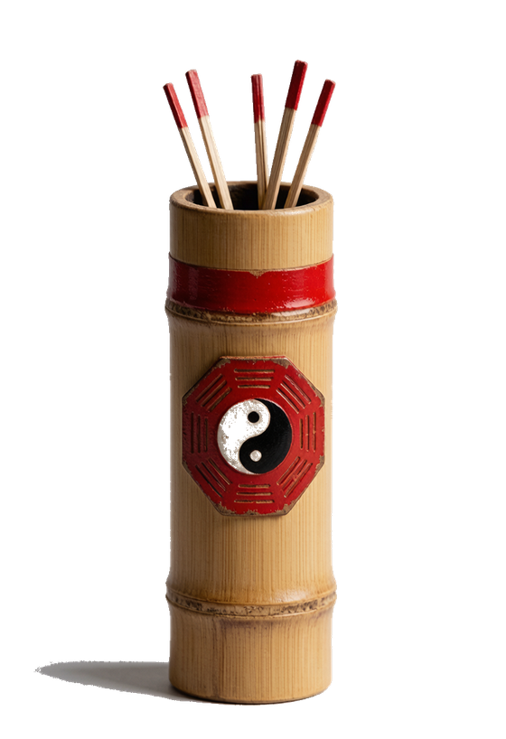

天人合一 · 顺应四时
—
正在推算今日节气与时辰……
打卡记录仅保存在本机浏览器（localStorage），用于见证你的坚持。
九宫洛书、八门九星八神与三奇六仪，据当日节气与干支离线排盘，为传统术数文化示意，仅供观赏，不作占断。
干支、八字、黄历、方位、取穴均由内置历法离线推算，仅供传统养生与文化参考，不替代专业命理或医疗建议。
每日功课依公历日期推算，每天不同、人人相同（并非随机）；下方功法与道经点标题即可展开。
正在推算今日功课……
道家养生以「清静无为、顺应自然」为纲，重在恬淡寡欲、形神双养。以下皆为传统静功与吐纳导引之法，点到即止、不涉宗教仪轨，可作日常调养参考。

诚心求签中……
签文录自《吕祖灵签》通行本（吕洞宾，道教全真道纯阳祖师，共一百签），仅作修身自省之镜，不作吉凶断言与占卜判定，亦不替代道观实物签谱。
运程依据当日干支、建除十二神与值神黄黑道离线推算，仅供传统养生与文化参考，不替代专业命理或医疗建议。
养生日历把「二十四节气、十二时辰、干支八字、道家养生」揉进每一天，离线推算、纯静态展示。下面用大白话讲清楚每个板块怎么看。
打开小程序默认看到的一屏速览，八大要点尽收眼底：
展示当令养生细节（古历罗盘实时走字）。
顶部「今日一眼通」是白话总览；下面四个板块点标题展开：
全部内容仅为传统养生与文化参考，不替代专业医疗或命理建议。